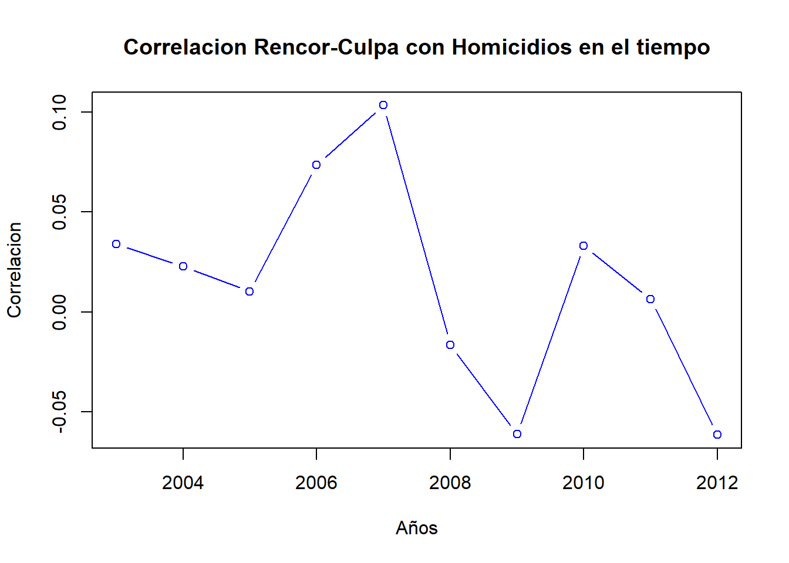

library(readstata13)
library(tidyr)
library(dplyr)
library(ggplot2)
library(data.table)
library(readxl)
library(doBy)
library(vtable)
library(plyr)
library(gridExtra)
library(grid)
library(Hmisc)
library(matrixStats)
library(ggpubr)datos_acdivoca <- read_excel('ACDI-VOCA - Base de Datos y Tabulados_F.xlsx')
#Ojo siempre abrir desde el dropbox de Felipe Gonzalez porque se hizo el cambio de variables chaacter a numerica desde Excel.
datos_acdivoca_num <- as.data.table(read_excel('ACDI-VOCA - Base de Datos y Tabulados_F.xlsx',
sheet=2))
datos_cede_conflicto <- as.data.table(read.dta13("PANEL_CONFLICTO_Y_VIOLENCIA.dta",
encoding="latin1", fromEncoding="UTF-8",
convert.factors = TRUE, generate.factors = TRUE,
nonint.factors=TRUE))
#Limpiar el codigo ID de la base acdivoca. Hay ciertos municipios que empiezan con un '0' y hay que quitarlo
datos_acdivoca_num$MPIO_IK <- ifelse(startsWith(as.character(datos_acdivoca_num$MPIO_IK),"0"),
sub("0{1}","",datos_acdivoca_num$MPIO_IK, ignore.case=TRUE),
datos_acdivoca_num$MPIO_IK)# 1. Limpiar y organizar bases de datos --------------------------------------------------
#Limpiar el codigo ID de la base acdivoca. Hay ciertos municipios que empiezan con un '0' y hay que quitarlo
datos_acdivoca_num$MPIO_IK <- ifelse(startsWith(as.character(datos_acdivoca_num$MPIO_IK),"0"),
sub("0{1}","",datos_acdivoca_num$MPIO_IK, ignore.case=TRUE),
datos_acdivoca_num$MPIO_IK)
setnames(datos_acdivoca, 'MPIO_IK', 'codmpio') #Para que el merge sea mas facil
setnames(datos_acdivoca_num, 'MPIO_IK', 'codmpio')
datos_acdivoca$codmpio <- as.character(datos_acdivoca$codmpio)
datos_acdivoca_num$codmpio <- as.character(datos_acdivoca_num$codmpio)
datos_cede_conflicto$codmpio <- as.character(datos_cede_conflicto$codmpio)
# 1. Meter municipio en codigo
Nombre_cod_municipio <- datos_acdivoca_num[,c('Municipio','codmpio')]
Nombre_cod_municipio$codmpio <- as.character(Nombre_cod_municipio$codmpio)
# 2. Eliminar las filas repetidas
Nombre_cod_municipio <- Nombre_cod_municipio[!duplicated(Nombre_cod_municipio),]
conflicto_44 <- merge(datos_cede_conflicto, Nombre_cod_municipio, by='codmpio', all.y = T)
# 4. Convertir ano en numero
conflicto_44$ano <- as.Date(conflicto_44$ano, '%Y', na.rm=T)# Pregunta p024 -- Preguntas de Reconciliacion. Todos son Directos, se suman para sacar un indice mas global.
datos_acdivoca_num$p024_tot <- datos_acdivoca_num %>%
select(p024_1, p024_2, p024_3, p024_4, p024_5, p024_6, p024_7, p024_8) %>%
rowSums()
# Otra forma de hacerlo con data.table.
#datos_acdivoca_num[ , p024_tot := rowSums(datos_acdivoca_num[,c(24:31)])]
label(datos_acdivoca_num$p024_tot) <- "Reconciliacion Directo"
#Pregunta p053 -- Pregunta sobre el perdon. Solo es una entonces good
label(datos_acdivoca_num$p053) <- "Perdon"
#Pregunta p058 y p059. Ambas de Violencia. La segunda tiene escala invertida. La Primera no. Se hacen los arreglos necesarios para poder sumarlas.
datos_acdivoca_num$p059 <- as.numeric(recode(datos_acdivoca_num$p059,"1"="5","2"="4","4"="2","5"="1", "3"="3"))
datos_acdivoca_num$p058_tot <- datos_acdivoca_num %>%
select(p058, p059) %>%
rowSums()
label(datos_acdivoca_num$p058_tot) <- "Violencia"
#Pregunta p071a y p071b. Este es chevere. La diferencia entre ambos arroja un coeficiente entre -4 y 4. Un 4 representa Rencor total y un -4 representa sentimientos de culpa(?). Un 0 es neutralidad/tranquilidad/perdon
datos_acdivoca_num$p071_tot <- datos_acdivoca_num %>%
select(p071_1, p071_2) %>%
as.matrix(.) %>%
matrixStats::rowDiffs()
label(datos_acdivoca_num$p071_tot) <- "Rencor-Culpa"
#Pregunta p075_1 es de memora historica.
label(datos_acdivoca_num$p075_1) <- "Memoria Historica"dtp024 <- summaryBy(p024_tot ~ Municipio, datos_acdivoca_num, FUN=c(sum, median, mean, sd), na.rm=F )
dtp053 <- summaryBy(p053 ~ Municipio, datos_acdivoca_num, FUN=c(sum, median, mean, sd), na.rm=F )
dtp058 <- summaryBy(p058_tot ~ Municipio, datos_acdivoca_num, FUN=c(sum, median, mean, sd), na.rm=F )
dtp071 <- summaryBy(p071_tot ~ Municipio, datos_acdivoca_num, FUN=c(sum, median, mean, sd), na.rm=F )
dtp075 <- summaryBy(p075_1 ~ Municipio, datos_acdivoca_num, FUN=c(sum, median, mean, sd), na.rm=F )#Homicidios
homi_GA <- grep('homi_{1}', names(conflicto_44), value = T) %>% grep('_pn',.,value = T, invert = T)
conflicto_44_tidy <- gather(conflicto_44, 'Grupo_Armado', 'Numero_Homicidios', homi_GA)
dthomi <- summaryBy(Numero_Homicidios ~ Municipio, conflicto_44_tidy, FUN=c(sum,median,mean,sd), na.rm=T )
#Ataques
ataque_GA <- grep("tpobc_{1}", names(conflicto_44), value = T)
conflicto_44_ataque <- gather(conflicto_44, key= "Grupo_Armado", value= "Ataques_Pobl_Civil", ataque_GA)
dtataque <- summaryBy(Ataques_Pobl_Civil ~ Municipio, conflicto_44_ataque, FUN=c(sum,median,mean,sd), na.rm=T )
#Secuestros
secuestro_GA <- grep("secu_{1}", names(conflicto_44), value = T)
conflicto_44_secuestro <- gather(conflicto_44, key= "Grupo_Armado", value= "Secuestros", secuestro_GA)
dtsecu <- summaryBy(Secuestros ~ Municipio, conflicto_44_secuestro, FUN=c(sum,median,mean,sd), na.rm=T )
#Secuestros Politcos
secuestrop_GA <- grep("secpo_{1}", names(conflicto_44), value = T)
conflicto_44_secuestrop <- gather(conflicto_44, key= "Grupo_Armado", value= "Secuestros_Politicos", secuestrop_GA)
dtsecup <- summaryBy(Secuestros_Politicos ~ Municipio, conflicto_44_secuestrop, FUN=c(sum,median, mean,sd), na.rm=T )
#Desmovilizados
desmovilizados <- grep("desmov_{1}", names(conflicto_44), value = T) #Seleccionar variables que empiecen con desmov_
desmovilizados <- desmovilizados[-c(2,4,7)]#Limpiar los nombres para poder hacer el gather
conflicto_44_desmovilizados <- gather(conflicto_44, key="Grupo_Armado",
value="Desmovilizados", c("desmov_OTRO","desmov_FARC","desmov_ELN",
"desmov_AUC"))
dtdemovilizados <- summaryBy(Ataques_Pobl_Civil ~ Municipio, conflicto_44_ataque, FUN=c(sum,median,mean,sd), na.rm=T )#Para sacar las correlaciones y las regresiones
#Hay dos criterios que se pueden seguir: coger la suma de las variables predictoras o la media. La predecida siempre va a ser la media porque o sino se infla.
correlaciones <- cbind(dthomi$Numero_Homicidios.mean, dtataque$Ataques_Pobl_Civil.mean, dtdemovilizados$Ataques_Pobl_Civil.mean, dtsecu$Secuestros.mean,dtsecup$Secuestros_Politicos.mean, dtp024$p024_tot.mean, dtp053$p053.mean, dtp058$p058_tot.mean, dtp071$p071_tot.mean, dtp075$p075_1.mean)
nombres <- c("Homicidios","Ataques_Pobl_Civil","Desmovilizados","Secuestros","Secuestros_Politcios", label(datos_acdivoca_num$p024_tot),label(datos_acdivoca_num$p053), label(datos_acdivoca_num$p058_tot), label(datos_acdivoca_num$p071_tot),label(datos_acdivoca_num$p075_1))
colnames(correlaciones) <- nombres
shapiro.test(dtsecup$Secuestros_Politicos.sum) #Todos los de CEDE son no siguen distribucion normal. Las escalas, por el contrario si las siguen. Toca tomar una decision alli.##
## Shapiro-Wilk normality test
##
## data: dtsecup$Secuestros_Politicos.sum
## W = 0.60454, p-value = 1.15e-09rcorr(correlaciones, type="spearman")## Homicidios Ataques_Pobl_Civil Desmovilizados
## Homicidios 1.00 0.86 0.86
## Ataques_Pobl_Civil 0.86 1.00 1.00
## Desmovilizados 0.86 1.00 1.00
## Secuestros 0.87 0.89 0.89
## Secuestros_Politcios 0.47 0.66 0.66
## Reconciliacion Directo -0.09 -0.13 -0.13
## Perdon 0.11 -0.01 -0.01
## Violencia 0.18 0.28 0.28
## Rencor-Culpa 0.02 -0.13 -0.13
## Memoria Historica -0.04 -0.03 -0.03
## Secuestros Secuestros_Politcios
## Homicidios 0.87 0.47
## Ataques_Pobl_Civil 0.89 0.66
## Desmovilizados 0.89 0.66
## Secuestros 1.00 0.59
## Secuestros_Politcios 0.59 1.00
## Reconciliacion Directo -0.10 -0.36
## Perdon 0.09 -0.01
## Violencia 0.04 0.20
## Rencor-Culpa -0.11 0.02
## Memoria Historica -0.11 -0.21
## Reconciliacion Directo Perdon Violencia
## Homicidios -0.09 0.11 0.18
## Ataques_Pobl_Civil -0.13 -0.01 0.28
## Desmovilizados -0.13 -0.01 0.28
## Secuestros -0.10 0.09 0.04
## Secuestros_Politcios -0.36 -0.01 0.20
## Reconciliacion Directo 1.00 0.09 -0.12
## Perdon 0.09 1.00 -0.46
## Violencia -0.12 -0.46 1.00
## Rencor-Culpa -0.24 -0.05 0.26
## Memoria Historica 0.18 0.14 -0.34
## Rencor-Culpa Memoria Historica
## Homicidios 0.02 -0.04
## Ataques_Pobl_Civil -0.13 -0.03
## Desmovilizados -0.13 -0.03
## Secuestros -0.11 -0.11
## Secuestros_Politcios 0.02 -0.21
## Reconciliacion Directo -0.24 0.18
## Perdon -0.05 0.14
## Violencia 0.26 -0.34
## Rencor-Culpa 1.00 -0.18
## Memoria Historica -0.18 1.00
##
## n= 44
##
##
## P
## Homicidios Ataques_Pobl_Civil Desmovilizados
## Homicidios 0.0000 0.0000
## Ataques_Pobl_Civil 0.0000 0.0000
## Desmovilizados 0.0000 0.0000
## Secuestros 0.0000 0.0000 0.0000
## Secuestros_Politcios 0.0013 0.0000 0.0000
## Reconciliacion Directo 0.5808 0.4135 0.4135
## Perdon 0.4600 0.9721 0.9721
## Violencia 0.2427 0.0687 0.0687
## Rencor-Culpa 0.8902 0.3837 0.3837
## Memoria Historica 0.7852 0.8601 0.8601
## Secuestros Secuestros_Politcios
## Homicidios 0.0000 0.0013
## Ataques_Pobl_Civil 0.0000 0.0000
## Desmovilizados 0.0000 0.0000
## Secuestros 0.0000
## Secuestros_Politcios 0.0000
## Reconciliacion Directo 0.5033 0.0156
## Perdon 0.5444 0.9319
## Violencia 0.7961 0.1893
## Rencor-Culpa 0.4931 0.9149
## Memoria Historica 0.4827 0.1813
## Reconciliacion Directo Perdon Violencia
## Homicidios 0.5808 0.4600 0.2427
## Ataques_Pobl_Civil 0.4135 0.9721 0.0687
## Desmovilizados 0.4135 0.9721 0.0687
## Secuestros 0.5033 0.5444 0.7961
## Secuestros_Politcios 0.0156 0.9319 0.1893
## Reconciliacion Directo 0.5506 0.4251
## Perdon 0.5506 0.0018
## Violencia 0.4251 0.0018
## Rencor-Culpa 0.1135 0.7347 0.0888
## Memoria Historica 0.2499 0.3727 0.0238
## Rencor-Culpa Memoria Historica
## Homicidios 0.8902 0.7852
## Ataques_Pobl_Civil 0.3837 0.8601
## Desmovilizados 0.3837 0.8601
## Secuestros 0.4931 0.4827
## Secuestros_Politcios 0.9149 0.1813
## Reconciliacion Directo 0.1135 0.2499
## Perdon 0.7347 0.3727
## Violencia 0.0888 0.0238
## Rencor-Culpa 0.2465
## Memoria Historica 0.2465rcorr(correlaciones, type="pearson")## Homicidios Ataques_Pobl_Civil Desmovilizados
## Homicidios 1.00 0.62 0.62
## Ataques_Pobl_Civil 0.62 1.00 1.00
## Desmovilizados 0.62 1.00 1.00
## Secuestros 0.79 0.46 0.46
## Secuestros_Politcios 0.32 0.69 0.69
## Reconciliacion Directo -0.08 -0.09 -0.09
## Perdon -0.10 -0.09 -0.09
## Violencia 0.18 0.32 0.32
## Rencor-Culpa -0.11 -0.29 -0.29
## Memoria Historica 0.00 0.05 0.05
## Secuestros Secuestros_Politcios
## Homicidios 0.79 0.32
## Ataques_Pobl_Civil 0.46 0.69
## Desmovilizados 0.46 0.69
## Secuestros 1.00 0.15
## Secuestros_Politcios 0.15 1.00
## Reconciliacion Directo -0.01 -0.18
## Perdon -0.17 -0.03
## Violencia 0.10 0.18
## Rencor-Culpa -0.13 -0.34
## Memoria Historica -0.09 0.07
## Reconciliacion Directo Perdon Violencia
## Homicidios -0.08 -0.10 0.18
## Ataques_Pobl_Civil -0.09 -0.09 0.32
## Desmovilizados -0.09 -0.09 0.32
## Secuestros -0.01 -0.17 0.10
## Secuestros_Politcios -0.18 -0.03 0.18
## Reconciliacion Directo 1.00 0.08 -0.19
## Perdon 0.08 1.00 -0.46
## Violencia -0.19 -0.46 1.00
## Rencor-Culpa -0.13 -0.06 0.28
## Memoria Historica 0.27 0.17 -0.35
## Rencor-Culpa Memoria Historica
## Homicidios -0.11 0.00
## Ataques_Pobl_Civil -0.29 0.05
## Desmovilizados -0.29 0.05
## Secuestros -0.13 -0.09
## Secuestros_Politcios -0.34 0.07
## Reconciliacion Directo -0.13 0.27
## Perdon -0.06 0.17
## Violencia 0.28 -0.35
## Rencor-Culpa 1.00 -0.21
## Memoria Historica -0.21 1.00
##
## n= 44
##
##
## P
## Homicidios Ataques_Pobl_Civil Desmovilizados
## Homicidios 0.0000 0.0000
## Ataques_Pobl_Civil 0.0000 0.0000
## Desmovilizados 0.0000 0.0000
## Secuestros 0.0000 0.0015 0.0015
## Secuestros_Politcios 0.0357 0.0000 0.0000
## Reconciliacion Directo 0.5908 0.5461 0.5461
## Perdon 0.5305 0.5616 0.5616
## Violencia 0.2310 0.0318 0.0318
## Rencor-Culpa 0.4586 0.0570 0.0570
## Memoria Historica 0.9985 0.7649 0.7649
## Secuestros Secuestros_Politcios
## Homicidios 0.0000 0.0357
## Ataques_Pobl_Civil 0.0015 0.0000
## Desmovilizados 0.0015 0.0000
## Secuestros 0.3284
## Secuestros_Politcios 0.3284
## Reconciliacion Directo 0.9450 0.2316
## Perdon 0.2612 0.8389
## Violencia 0.5222 0.2526
## Rencor-Culpa 0.4026 0.0242
## Memoria Historica 0.5414 0.6673
## Reconciliacion Directo Perdon Violencia
## Homicidios 0.5908 0.5305 0.2310
## Ataques_Pobl_Civil 0.5461 0.5616 0.0318
## Desmovilizados 0.5461 0.5616 0.0318
## Secuestros 0.9450 0.2612 0.5222
## Secuestros_Politcios 0.2316 0.8389 0.2526
## Reconciliacion Directo 0.6094 0.2256
## Perdon 0.6094 0.0019
## Violencia 0.2256 0.0019
## Rencor-Culpa 0.3832 0.7012 0.0621
## Memoria Historica 0.0761 0.2813 0.0214
## Rencor-Culpa Memoria Historica
## Homicidios 0.4586 0.9985
## Ataques_Pobl_Civil 0.0570 0.7649
## Desmovilizados 0.0570 0.7649
## Secuestros 0.4026 0.5414
## Secuestros_Politcios 0.0242 0.6673
## Reconciliacion Directo 0.3832 0.0761
## Perdon 0.7012 0.2813
## Violencia 0.0621 0.0214
## Rencor-Culpa 0.1771
## Memoria Historica 0.1771correlaciones_sum_mean <- cbind(dthomi$Numero_Homicidios.sum, dtataque$Ataques_Pobl_Civil.sum, dtdemovilizados$Ataques_Pobl_Civil.sum, dtsecu$Secuestros.sum,dtsecup$Secuestros_Politicos.sum, dtp024$p024_tot.mean, dtp053$p053.mean, dtp058$p058_tot.mean, dtp071$p071_tot.mean, dtp075$p075_1.mean)
nombres <- c("Homicidios","Ataques_Pobl_Civil","Desmovilizados","Secuestros","Secuestros_Politcios", label(datos_acdivoca_num$p024_tot),label(datos_acdivoca_num$p053), label(datos_acdivoca_num$p058_tot), label(datos_acdivoca_num$p071_tot),label(datos_acdivoca_num$p075_1))
colnames(correlaciones_sum_mean) <- nombres
shapiro.test(dtsecup$Secuestros_Politicos.sum) #Todos los de CEDE son no siguen distribucion normal. Las escalas, por el contrario si las siguen. Toca tomar una decision alli.##
## Shapiro-Wilk normality test
##
## data: dtsecup$Secuestros_Politicos.sum
## W = 0.60454, p-value = 1.15e-09rcorr(correlaciones_sum_mean, type="spearman")## Homicidios Ataques_Pobl_Civil Desmovilizados
## Homicidios 1.00 0.86 0.86
## Ataques_Pobl_Civil 0.86 1.00 1.00
## Desmovilizados 0.86 1.00 1.00
## Secuestros 0.87 0.89 0.89
## Secuestros_Politcios 0.47 0.66 0.66
## Reconciliacion Directo -0.09 -0.13 -0.13
## Perdon 0.11 -0.01 -0.01
## Violencia 0.18 0.28 0.28
## Rencor-Culpa 0.02 -0.13 -0.13
## Memoria Historica -0.04 -0.03 -0.03
## Secuestros Secuestros_Politcios
## Homicidios 0.87 0.47
## Ataques_Pobl_Civil 0.89 0.66
## Desmovilizados 0.89 0.66
## Secuestros 1.00 0.59
## Secuestros_Politcios 0.59 1.00
## Reconciliacion Directo -0.10 -0.36
## Perdon 0.09 -0.01
## Violencia 0.04 0.20
## Rencor-Culpa -0.11 0.02
## Memoria Historica -0.11 -0.21
## Reconciliacion Directo Perdon Violencia
## Homicidios -0.09 0.11 0.18
## Ataques_Pobl_Civil -0.13 -0.01 0.28
## Desmovilizados -0.13 -0.01 0.28
## Secuestros -0.10 0.09 0.04
## Secuestros_Politcios -0.36 -0.01 0.20
## Reconciliacion Directo 1.00 0.09 -0.12
## Perdon 0.09 1.00 -0.46
## Violencia -0.12 -0.46 1.00
## Rencor-Culpa -0.24 -0.05 0.26
## Memoria Historica 0.18 0.14 -0.34
## Rencor-Culpa Memoria Historica
## Homicidios 0.02 -0.04
## Ataques_Pobl_Civil -0.13 -0.03
## Desmovilizados -0.13 -0.03
## Secuestros -0.11 -0.11
## Secuestros_Politcios 0.02 -0.21
## Reconciliacion Directo -0.24 0.18
## Perdon -0.05 0.14
## Violencia 0.26 -0.34
## Rencor-Culpa 1.00 -0.18
## Memoria Historica -0.18 1.00
##
## n= 44
##
##
## P
## Homicidios Ataques_Pobl_Civil Desmovilizados
## Homicidios 0.0000 0.0000
## Ataques_Pobl_Civil 0.0000 0.0000
## Desmovilizados 0.0000 0.0000
## Secuestros 0.0000 0.0000 0.0000
## Secuestros_Politcios 0.0013 0.0000 0.0000
## Reconciliacion Directo 0.5808 0.4135 0.4135
## Perdon 0.4600 0.9721 0.9721
## Violencia 0.2427 0.0687 0.0687
## Rencor-Culpa 0.8902 0.3837 0.3837
## Memoria Historica 0.7852 0.8601 0.8601
## Secuestros Secuestros_Politcios
## Homicidios 0.0000 0.0013
## Ataques_Pobl_Civil 0.0000 0.0000
## Desmovilizados 0.0000 0.0000
## Secuestros 0.0000
## Secuestros_Politcios 0.0000
## Reconciliacion Directo 0.5033 0.0156
## Perdon 0.5444 0.9319
## Violencia 0.7961 0.1893
## Rencor-Culpa 0.4931 0.9149
## Memoria Historica 0.4827 0.1813
## Reconciliacion Directo Perdon Violencia
## Homicidios 0.5808 0.4600 0.2427
## Ataques_Pobl_Civil 0.4135 0.9721 0.0687
## Desmovilizados 0.4135 0.9721 0.0687
## Secuestros 0.5033 0.5444 0.7961
## Secuestros_Politcios 0.0156 0.9319 0.1893
## Reconciliacion Directo 0.5506 0.4251
## Perdon 0.5506 0.0018
## Violencia 0.4251 0.0018
## Rencor-Culpa 0.1135 0.7347 0.0888
## Memoria Historica 0.2499 0.3727 0.0238
## Rencor-Culpa Memoria Historica
## Homicidios 0.8902 0.7852
## Ataques_Pobl_Civil 0.3837 0.8601
## Desmovilizados 0.3837 0.8601
## Secuestros 0.4931 0.4827
## Secuestros_Politcios 0.9149 0.1813
## Reconciliacion Directo 0.1135 0.2499
## Perdon 0.7347 0.3727
## Violencia 0.0888 0.0238
## Rencor-Culpa 0.2465
## Memoria Historica 0.2465rcorr(correlaciones_sum_mean, type="pearson")## Homicidios Ataques_Pobl_Civil Desmovilizados
## Homicidios 1.00 0.62 0.62
## Ataques_Pobl_Civil 0.62 1.00 1.00
## Desmovilizados 0.62 1.00 1.00
## Secuestros 0.79 0.46 0.46
## Secuestros_Politcios 0.32 0.69 0.69
## Reconciliacion Directo -0.08 -0.09 -0.09
## Perdon -0.10 -0.09 -0.09
## Violencia 0.18 0.32 0.32
## Rencor-Culpa -0.11 -0.29 -0.29
## Memoria Historica 0.00 0.05 0.05
## Secuestros Secuestros_Politcios
## Homicidios 0.79 0.32
## Ataques_Pobl_Civil 0.46 0.69
## Desmovilizados 0.46 0.69
## Secuestros 1.00 0.15
## Secuestros_Politcios 0.15 1.00
## Reconciliacion Directo -0.01 -0.18
## Perdon -0.17 -0.03
## Violencia 0.10 0.18
## Rencor-Culpa -0.13 -0.34
## Memoria Historica -0.09 0.07
## Reconciliacion Directo Perdon Violencia
## Homicidios -0.08 -0.10 0.18
## Ataques_Pobl_Civil -0.09 -0.09 0.32
## Desmovilizados -0.09 -0.09 0.32
## Secuestros -0.01 -0.17 0.10
## Secuestros_Politcios -0.18 -0.03 0.18
## Reconciliacion Directo 1.00 0.08 -0.19
## Perdon 0.08 1.00 -0.46
## Violencia -0.19 -0.46 1.00
## Rencor-Culpa -0.13 -0.06 0.28
## Memoria Historica 0.27 0.17 -0.35
## Rencor-Culpa Memoria Historica
## Homicidios -0.11 0.00
## Ataques_Pobl_Civil -0.29 0.05
## Desmovilizados -0.29 0.05
## Secuestros -0.13 -0.09
## Secuestros_Politcios -0.34 0.07
## Reconciliacion Directo -0.13 0.27
## Perdon -0.06 0.17
## Violencia 0.28 -0.35
## Rencor-Culpa 1.00 -0.21
## Memoria Historica -0.21 1.00
##
## n= 44
##
##
## P
## Homicidios Ataques_Pobl_Civil Desmovilizados
## Homicidios 0.0000 0.0000
## Ataques_Pobl_Civil 0.0000 0.0000
## Desmovilizados 0.0000 0.0000
## Secuestros 0.0000 0.0015 0.0015
## Secuestros_Politcios 0.0357 0.0000 0.0000
## Reconciliacion Directo 0.5908 0.5461 0.5461
## Perdon 0.5305 0.5616 0.5616
## Violencia 0.2310 0.0318 0.0318
## Rencor-Culpa 0.4586 0.0570 0.0570
## Memoria Historica 0.9985 0.7649 0.7649
## Secuestros Secuestros_Politcios
## Homicidios 0.0000 0.0357
## Ataques_Pobl_Civil 0.0015 0.0000
## Desmovilizados 0.0015 0.0000
## Secuestros 0.3284
## Secuestros_Politcios 0.3284
## Reconciliacion Directo 0.9450 0.2316
## Perdon 0.2612 0.8389
## Violencia 0.5222 0.2526
## Rencor-Culpa 0.4026 0.0242
## Memoria Historica 0.5414 0.6673
## Reconciliacion Directo Perdon Violencia
## Homicidios 0.5908 0.5305 0.2310
## Ataques_Pobl_Civil 0.5461 0.5616 0.0318
## Desmovilizados 0.5461 0.5616 0.0318
## Secuestros 0.9450 0.2612 0.5222
## Secuestros_Politcios 0.2316 0.8389 0.2526
## Reconciliacion Directo 0.6094 0.2256
## Perdon 0.6094 0.0019
## Violencia 0.2256 0.0019
## Rencor-Culpa 0.3832 0.7012 0.0621
## Memoria Historica 0.0761 0.2813 0.0214
## Rencor-Culpa Memoria Historica
## Homicidios 0.4586 0.9985
## Ataques_Pobl_Civil 0.0570 0.7649
## Desmovilizados 0.0570 0.7649
## Secuestros 0.4026 0.5414
## Secuestros_Politcios 0.0242 0.6673
## Reconciliacion Directo 0.3832 0.0761
## Perdon 0.7012 0.2813
## Violencia 0.0621 0.0214
## Rencor-Culpa 0.1771
## Memoria Historica 0.1771dfcorrelaciones <- as.data.frame(correlaciones)
regRecon_direct <- lm(`Reconciliacion Directo` ~ Homicidios+Ataques_Pobl_Civil+`Desmovilizados`+Secuestros+Secuestros_Politcios, data=dfcorrelaciones)
summary(regRecon_direct)##
## Call:
## lm(formula = `Reconciliacion Directo` ~ Homicidios + Ataques_Pobl_Civil +
## Desmovilizados + Secuestros + Secuestros_Politcios, data = dfcorrelaciones)
##
## Residuals:
## Min 1Q Median 3Q Max
## -5.8761 -1.1058 -0.1575 0.9997 5.1149
##
## Coefficients: (1 not defined because of singularities)
## Estimate Std. Error t value Pr(>|t|)
## (Intercept) 27.89702 0.47109 59.218 <2e-16 ***
## Homicidios -0.01110 0.02009 -0.552 0.584
## Ataques_Pobl_Civil 0.05524 0.11952 0.462 0.647
## Desmovilizados NA NA NA NA
## Secuestros 0.17950 0.50553 0.355 0.724
## Secuestros_Politcios -11.16934 10.74537 -1.039 0.305
## ---
## Signif. codes: 0 '***' 0.001 '**' 0.01 '*' 0.05 '.' 0.1 ' ' 1
##
## Residual standard error: 2.512 on 39 degrees of freedom
## Multiple R-squared: 0.04359, Adjusted R-squared: -0.05451
## F-statistic: 0.4443 on 4 and 39 DF, p-value: 0.7758regPerdon <- lm(Perdon ~ Homicidios+Ataques_Pobl_Civil+`Desmovilizados`+Secuestros+Secuestros_Politcios, data=dfcorrelaciones)
summary(regPerdon)##
## Call:
## lm(formula = Perdon ~ Homicidios + Ataques_Pobl_Civil + Desmovilizados +
## Secuestros + Secuestros_Politcios, data = dfcorrelaciones)
##
## Residuals:
## Min 1Q Median 3Q Max
## -0.54759 -0.13745 0.00727 0.16640 0.47409
##
## Coefficients: (1 not defined because of singularities)
## Estimate Std. Error t value Pr(>|t|)
## (Intercept) 3.823978 0.050939 75.070 <2e-16 ***
## Homicidios 0.001065 0.002173 0.490 0.627
## Ataques_Pobl_Civil -0.003066 0.012924 -0.237 0.814
## Desmovilizados NA NA NA NA
## Secuestros -0.054033 0.054663 -0.988 0.329
## Secuestros_Politcios 0.032572 1.161901 0.028 0.978
## ---
## Signif. codes: 0 '***' 0.001 '**' 0.01 '*' 0.05 '.' 0.1 ' ' 1
##
## Residual standard error: 0.2716 on 39 degrees of freedom
## Multiple R-squared: 0.03603, Adjusted R-squared: -0.06284
## F-statistic: 0.3644 on 4 and 39 DF, p-value: 0.8324regViolencia <- lm(Violencia ~ Homicidios+Ataques_Pobl_Civil+`Desmovilizados`+Secuestros+Secuestros_Politcios, data=dfcorrelaciones)
summary(regViolencia)##
## Call:
## lm(formula = Violencia ~ Homicidios + Ataques_Pobl_Civil + Desmovilizados +
## Secuestros + Secuestros_Politcios, data = dfcorrelaciones)
##
## Residuals:
## Min 1Q Median 3Q Max
## -0.7676 -0.3140 -0.1167 0.2482 1.0360
##
## Coefficients: (1 not defined because of singularities)
## Estimate Std. Error t value Pr(>|t|)
## (Intercept) 4.639335 0.089073 52.084 <2e-16 ***
## Homicidios 0.000621 0.003799 0.163 0.871
## Ataques_Pobl_Civil 0.037942 0.022599 1.679 0.101
## Desmovilizados NA NA NA NA
## Secuestros -0.046372 0.095586 -0.485 0.630
## Secuestros_Politcios -1.130684 2.031735 -0.557 0.581
## ---
## Signif. codes: 0 '***' 0.001 '**' 0.01 '*' 0.05 '.' 0.1 ' ' 1
##
## Residual standard error: 0.4749 on 39 degrees of freedom
## Multiple R-squared: 0.1161, Adjusted R-squared: 0.02548
## F-statistic: 1.281 on 4 and 39 DF, p-value: 0.294regRencorculpa <- lm(`Rencor-Culpa` ~ Homicidios+Ataques_Pobl_Civil+`Desmovilizados`+Secuestros+Secuestros_Politcios, data=dfcorrelaciones)
summary(regRencorculpa)##
## Call:
## lm(formula = `Rencor-Culpa` ~ Homicidios + Ataques_Pobl_Civil +
## Desmovilizados + Secuestros + Secuestros_Politcios, data = dfcorrelaciones)
##
## Residuals:
## Min 1Q Median 3Q Max
## -0.47165 -0.10876 -0.03848 0.17737 0.33741
##
## Coefficients: (1 not defined because of singularities)
## Estimate Std. Error t value Pr(>|t|)
## (Intercept) -0.239435 0.035712 -6.705 5.47e-08 ***
## Homicidios 0.001145 0.001523 0.752 0.457
## Ataques_Pobl_Civil -0.004834 0.009061 -0.534 0.597
## Desmovilizados NA NA NA NA
## Secuestros -0.028927 0.038323 -0.755 0.455
## Secuestros_Politcios -1.078315 0.814586 -1.324 0.193
## ---
## Signif. codes: 0 '***' 0.001 '**' 0.01 '*' 0.05 '.' 0.1 ' ' 1
##
## Residual standard error: 0.1904 on 39 degrees of freedom
## Multiple R-squared: 0.1357, Adjusted R-squared: 0.0471
## F-statistic: 1.531 on 4 and 39 DF, p-value: 0.2121regMemoria <- lm(`Memoria Historica` ~ Homicidios+Ataques_Pobl_Civil+`Desmovilizados`+Secuestros+Secuestros_Politcios, data=dfcorrelaciones)
summary(regMemoria)##
## Call:
## lm(formula = `Memoria Historica` ~ Homicidios + Ataques_Pobl_Civil +
## Desmovilizados + Secuestros + Secuestros_Politcios, data = dfcorrelaciones)
##
## Residuals:
## Min 1Q Median 3Q Max
## -0.79700 -0.22456 0.01515 0.22131 0.64660
##
## Coefficients: (1 not defined because of singularities)
## Estimate Std. Error t value Pr(>|t|)
## (Intercept) 3.327378 0.065595 50.726 <2e-16 ***
## Homicidios 0.001435 0.002798 0.513 0.611
## Ataques_Pobl_Civil 0.002983 0.016642 0.179 0.859
## Desmovilizados NA NA NA NA
## Secuestros -0.064312 0.070391 -0.914 0.367
## Secuestros_Politcios 0.142359 1.496208 0.095 0.925
## ---
## Signif. codes: 0 '***' 0.001 '**' 0.01 '*' 0.05 '.' 0.1 ' ' 1
##
## Residual standard error: 0.3497 on 39 degrees of freedom
## Multiple R-squared: 0.02609, Adjusted R-squared: -0.07379
## F-statistic: 0.2612 on 4 and 39 DF, p-value: 0.901#Vamos a ver como cambia la correlacion de Rencor-Culpa con Homicidios en el tiempo
conflicto_44_tidy$ano_num <- substring(conflicto_44_tidy$ano,1,4)
conflicto_44_tidy$ano_num <- as.numeric(conflicto_44_tidy$ano_num)
#Loop para hacer la correlacion por año.
homicidios <- c()
x <- c()
y <- c()
for(i in 1:10) {
homicidios <- conflicto_44_tidy %>%
filter(ano_num==2002+i) %>%
select(Numero_Homicidios, Municipio) %>%
summaryBy(Numero_Homicidios ~ Municipio, ., FUN=c(sum, mean), na.rm=T ) %>%
select(Numero_Homicidios.sum) %>%
as.data.frame()
conflicto_44_tidy$valores_corr[i] <- cor(homicidios ,dfcorrelaciones$`Rencor-Culpa`,method = "spearman")
x[i] <- 2002+i
y[i] <- cor(homicidios, dfcorrelaciones$`Rencor-Culpa`,method = "spearman")
}plot(x,y, type="b", col="blue", main= "Correlacion Rencor-Culpa con Homicidios en el tiempo", xlab="Años", ylab= "Correlacion")